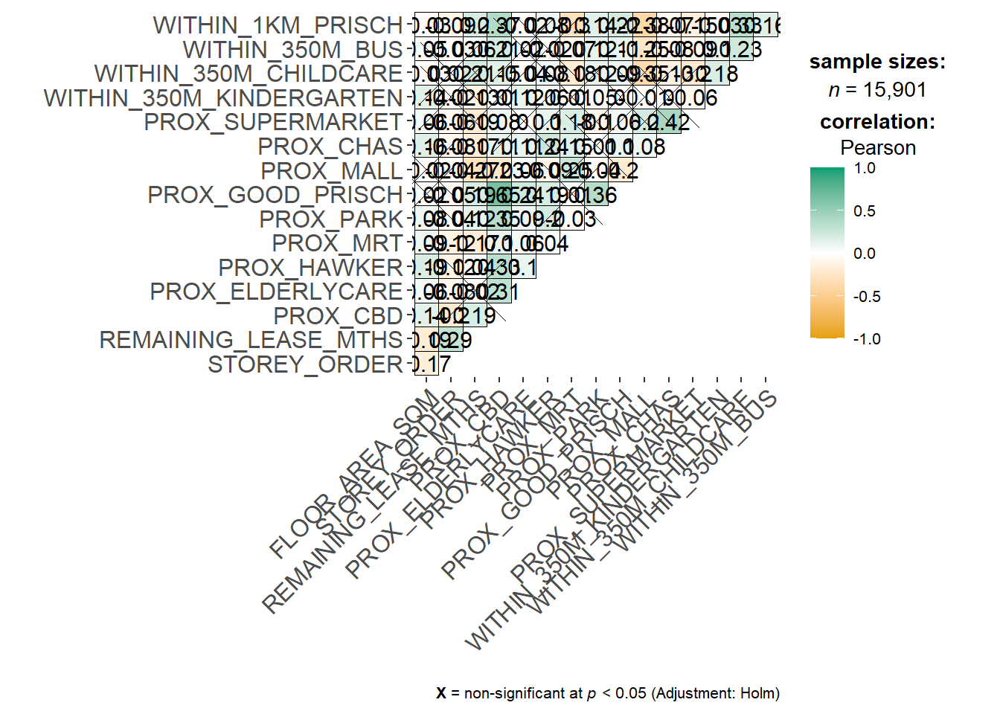
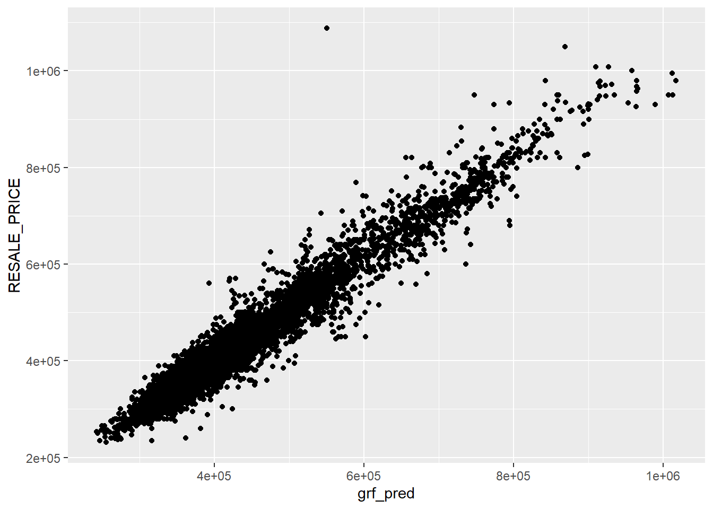

pacman::p_load(sf, spdep, GWmodel, SpatialML,
tmap, tidymodels, tidyverse,
gtsummary, rpart, rpart.plot,
ggstatsplot, performance)In-class Exercise 9: Geographically Weighted Predictive Models
Packages
Data
rs_sf <- read_rds('data/rds/HDB_resale.rds')rs_sfSimple feature collection with 15901 features and 17 fields
Geometry type: POINT
Dimension: XY
Bounding box: xmin: 11597.31 ymin: 28217.39 xmax: 42623.63 ymax: 48741.06
Projected CRS: SVY21 / Singapore TM
# A tibble: 15,901 × 18
RESALE_PRICE FLOOR_AREA_SQM STOREY_ORDER REMAINING_LEASE_MTHS PROX_CBD
<dbl> <dbl> <int> <dbl> <dbl>
1 330000 92 1 684 8.82
2 360000 91 3 738 9.84
3 370000 92 1 733 9.56
4 375000 99 2 700 9.61
5 380000 92 2 715 8.35
6 380000 92 4 732 9.49
7 385000 92 3 706 8.96
8 395000 92 2 745 9.81
9 395000 93 4 731 10.3
10 395000 91 3 725 10.4
# ℹ 15,891 more rows
# ℹ 13 more variables: PROX_ELDERLYCARE <dbl>, PROX_HAWKER <dbl>,
# PROX_MRT <dbl>, PROX_PARK <dbl>, PROX_GOOD_PRISCH <dbl>, PROX_MALL <dbl>,
# PROX_CHAS <dbl>, PROX_SUPERMARKET <dbl>, WITHIN_350M_KINDERGARTEN <int>,
# WITHIN_350M_CHILDCARE <int>, WITHIN_350M_BUS <int>,
# WITHIN_1KM_PRISCH <int>, geometry <POINT [m]>Let’s split the data into training and testing sets with a 50-50 split.
set.seed(1234)
resale_split <- initial_split(
rs_sf,
prop = 5/10)
train_sf <- training(resale_split)
test_sf <- testing(resale_split)We first need to convert the data to a dataframe of base R because the SpatialML package only work with dataframes.
train_df <- train_sf |>
st_drop_geometry() |>
as.data.frame()
test_df <- test_sf |>
st_drop_geometry() |>
as.data.frame()rs_sf1 <- rs_sf |>
st_drop_geometry()
ggcorrmat(rs_sf1[, 2:17])
rs_mlr <- lm(RESALE_PRICE ~ ., data = train_df)
tbl_regression(rs_mlr)| Characteristic | Beta | 95% CI1 | p-value |
|---|---|---|---|
| FLOOR_AREA_SQM | 2,803 | 2,601, 3,005 | <0.001 |
| STOREY_ORDER | 14,044 | 13,292, 14,796 | <0.001 |
| REMAINING_LEASE_MTHS | 345 | 335, 355 | <0.001 |
| PROX_CBD | -17,918 | -18,434, -17,403 | <0.001 |
| PROX_ELDERLYCARE | -14,469 | -16,672, -12,265 | <0.001 |
| PROX_HAWKER | -17,101 | -19,961, -14,240 | <0.001 |
| PROX_MRT | -31,603 | -35,448, -27,758 | <0.001 |
| PROX_PARK | -9,334 | -12,677, -5,992 | <0.001 |
| PROX_GOOD_PRISCH | 2,787 | 2,036, 3,539 | <0.001 |
| PROX_MALL | -12,320 | -16,777, -7,863 | <0.001 |
| PROX_CHAS | -9,057 | -23,168, 5,054 | 0.2 |
| PROX_SUPERMARKET | -25,758 | -35,671, -15,845 | <0.001 |
| WITHIN_350M_KINDERGARTEN | 8,707 | 7,297, 10,117 | <0.001 |
| WITHIN_350M_CHILDCARE | -4,537 | -5,317, -3,756 | <0.001 |
| WITHIN_350M_BUS | 1,067 | 573, 1,562 | <0.001 |
| WITHIN_1KM_PRISCH | -8,192 | -9,277, -7,108 | <0.001 |
| 1 CI = Confidence Interval | |||
We can see that all the variables are significant, except PROX_CHAS. So, we will remove it.
train_df <- train_df |>
select(-PROX_CHAS)
test_df <- test_df |>
select(-PROX_CHAS)
train_sf <- train_sf |>
select(-PROX_CHAS)
test_sf <- test_sf |>
select(-PROX_CHAS)Now let’s fit the model with the processed data.
rs_mlr <- lm(RESALE_PRICE ~ ., data = train_df)Or, similarly, we can just remove the
PROX_CHASvariable from the formula if you do not want to remove it from your dataframe using the code below.
rs_mlr <- lm(RESALE_PRICE ~ . -PROX_CHAS, data = train_df)
Calibrating the GWRF model
The code chunk below extracts the x and y coordinates of the full, training, and the test data. We need to do this because the SpatialML package needs a separate dataframe for the x and y coordinates, unlike the GWR model that we used in the previous lesson.
coords <- st_coordinates(rs_sf)
corrds_train <- st_coordinates(train_sf)
corrds_test <- st_coordinates(test_sf)Rpart
rs_rp <- rpart(RESALE_PRICE ~ ., data = train_df)
rpart.plot(rs_rp)
RF
set.seed(1234)
rs_rf <- ranger(formula = RESALE_PRICE ~ ., data = train_df, importance = "impurity")
rs_rfwrite_rds(rs_rf, "data/models/rs_rf.rds")rs_rf <- read_rds("data/models/rs_rf.rds")vi <- as.data.frame(rs_rf$variable.importance)
vi$variables <- rownames(vi)
vi <- vi |> rename(vi = "rs_rf$variable.importance")ggplot(data = vi,
aes(x = vi,
y = reorder(variables, vi))) +
geom_bar(stat="identity")
For cleaner code, we can just use
geom_col()instead ofgeom_bar(stat="identity").
ggplot(data = vi) + geom_col(aes(x = vi, y = reorder(variables, vi)))
From the output above, we can see that the model work well with the variables provided. However, if the model cannot utilize the variables, your model might suffer from quasi-separation or quasi complete separation problem.
Now, we can use the model to predict the test data.
grf_pred <- predict(rs_rf, data = test_df)
write_rds(grf_pred, "data/models/grf_pred.rds")
rf_pred <- predict(rs_rf, data = test_df)
write_rds(rf_pred, "data/models/rf_pred.rds")
mlr_pred <- predict(rs_mlr, test_df)
write_rds(mlr_pred, "data/models/mlr_pred.rds")grf_pred <- read_rds("data/models/grf_pred.rds")
grf_pred_df <- as.data.frame(grf_pred$predictions) |> rename(grf_pred = "grf_pred$predictions")
rf_pred <- read_rds("data/models/rf_pred.rds")
rf_pred_df <- as.data.frame(rf_pred$predictions) |> rename(rf_pred = "rf_pred$predictions")
mlr_pred <- read_rds("data/models/mlr_pred.rds")
mlr_pred_df <- as.data.frame(mlr_pred) |> rename(mlr_pred = "mlr_pred")test_pred <- test_df |>
select(RESALE_PRICE) |>
cbind(grf_pred_df, rf_pred_df, mlr_pred_df)to comparison between the models
mc <- test_pred |> pivot_longer(cols=c(2:4),
names_to = "models",
values_to = "predicted")mc |> group_by(models) |> yardstick::rmse(RESALE_PRICE, predicted)# A tibble: 3 × 4
models .metric .estimator .estimate
<chr> <chr> <chr> <dbl>
1 grf_pred rmse standard 28348.
2 mlr_pred rmse standard 61617.
3 rf_pred rmse standard 28348.mc |> group_by(models) |> yardstick::mape(RESALE_PRICE, predicted)# A tibble: 3 × 4
models .metric .estimator .estimate
<chr> <chr> <chr> <dbl>
1 grf_pred mape standard 4.57
2 mlr_pred mape standard 10.8
3 rf_pred mape standard 4.57We can see that the random forest model outperforms the multi regression model. The basic non-geographic random forest model is better than the geographic random forest model. Therefore, in this use case, we will just use the random forest model because it runs faster than the geographic random forest model.
ggplot(data = test_pred,
aes(x = grf_pred,
y=RESALE_PRICE)) +
geom_point()